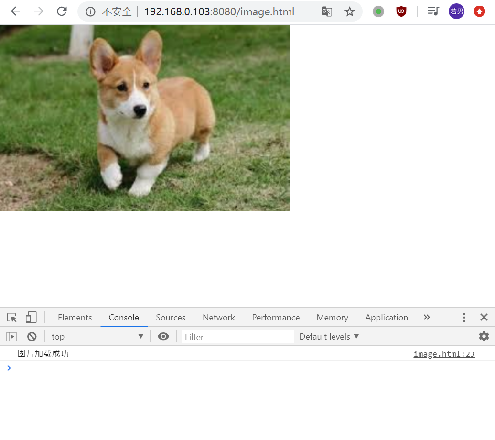

POSTS
HTML常用标签
, 3935 words本篇博客主要为课堂笔记，主要在 VSCode 中操作，项目文件夹名为 html-demo-2，以下内容分为四个主要部分：
a标签的用法table标签的用法img标签的用法- 其他标签知识
一、a 标签的用法
<a> 元素（或称锚元素）可以创建通向其他网页、文件、同一页面内的位置、电子邮件地址或任何其他 URL 的超链接。
-
属性
- href（hyper reference）//超级引用，超链接；
- target //指定在何处显示链接的资源；
- download //下载网页，网站不一定支持；
- rel=noopener
工具小链接:终端安装两个可以预览网页的工具
- http-server
安装：
yarn global add http-server//可以输入网址看到页面；
=>http-server . -c-1orhttp-server -c-1,可以缩写为hs -c-1。//c 是缓存，c=-1 表示不要缓存。=> 运行之后出现四个网址，随便点一个，打开后加上网页具体路径就可以预览。若要手机预览四个地址的话，需要和电脑同一个 wifi。
注意：永远不要双击打开 html。
用 http server 来打开预览，这样可以避免遇到很多奇奇怪怪的 bug。 - parcel
安装：
yarn global add parcel=>parcel a.href.html=>出现一个地址，点击预览
- http-server
安装：
-
作用
- 跳转外部页面
- 跳转内部锚点
- 跳转到邮箱或电话等
1.a 的 href 的取值
包含超链接指向的 URL 或 URL 片段。
URL 片段是哈希标记（#）前面的名称，哈希标记指定当前文档中的内部目标位置（HTML 元素的 ID）。URL 不限于基于 Web（HTTP）的文档，也可以使用浏览器支持的任何协议。例如，在大多数浏览器中正常工作的file:、ftp:和mailto：。
注意: 可以使用
href="#top"或者href="#"链接返回到页面顶部。这种行为是 HTML5 的特性。
-
网址
- https://google.com
- http://google.com
- //google.com //无协议的网址，最高级，推荐使用。会自动选择适用 http 还是 https，不会报错。在 vscode 中写上这个网址，打开这个网址，打开开发者工具，点击 network 下的 preserve log，然后再打开超链接。
-
路径
/a/b/c以及a/b/c//都可以写，他们是 http 中的根目录是 html-demo-2；index.html以及./index.html//直接写这两个都能在当前目录找到
-
伪协议
- javascript:代码;
//javascript:alert(1);
打开网页点击可直接运行这串代码。常用来写一个什么都不做的 a 标签。 - mailto:邮箱 //发邮件
- tel:手机号
- javascript:代码;
-
id
href=#xxx//a 里面加一个 id，跳转到指定的标签
2.a 的 target 取值
target 属性指定在何处显示链接的资源。取值为标签（tab），窗口（window），或框架（iframe）等浏览上下文的名称或其他关键词。
-
内置名字/关键词
_self: 当前页面加载，即当前的响应到同一 HTML 4 frame（或 HTML5 浏览上下文）。此值是默认的，如果没有指定属性的话。_blank: 新窗口打开，即到一个新的未命名的 HTML4 窗口或 HTML5 浏览器上下文_parent: 加载响应到当前框架的 HTML4 父框架或当前的 HTML5 浏览上下文的父浏览上下文。如果没有 parent 框架或者浏览上下文，此选项的行为方式与 _self 相同。_top: IHTML4 中：加载的响应成完整的，原来的窗口，取消所有其它 frame。 HTML5 中：加载响应进入顶层浏览上下文（即，浏览上下文，它是当前的一个的祖先，并且没有 parent）。如果没有 parent 框架或者浏览上下文，此选项的行为方式相同_self。
注意： 使用 target 时，考虑添加
rel="noopener norefferrer"以防止针对 window.opener API 的恶意行为。
-
程序员命名
- window 的 name //用同一个窗口打开不同页面;
- iframe 的 name
-
iframe 标签
内嵌窗口，已经很少使用，还有些老系统在用。新的前端用 ajax。谷歌不允许别人用 iframe 执行它。
3.a 的 download
-
作用
下载页面 -
问题
不是所有浏览器都支持，尤其是手机浏览器可能不支持。
二、table 标签的用法
table 元素表示表格数据——即通过二维数据表表示的信息。
<table>
<thead>
<tr>
<th colspan="2">The table header</th>
</tr>
</thead>
<tbody>
<tr>
<td>The table body</td>
<td>with two columns</td>
</tr>
</tbody>
<tfoot>我定义了一组表格中各列的汇总行
</tfoot>
</table>
-
相关标签
<thead>元素定义了一组定义表格的列头的行；<tbody>//tr 没有指定放在哪里时，默认放在 tbody 里；<tfoot>定义了一组表格中各列的汇总行；<tr>(table row)元素定义表格中的行。 Those can be a mix of and elements.<td>(table data)元素定义了一个包含数据的表格单元格。It participates in the table model.<th>表头
-
相关的样式
- table-layout //auto 根据内容计算表格宽度/fixed
- border-collapse //边框合并
- border-spacing //border 之间的距离为 0
三、img 标签的用法
<img src="a.jpg" alt="一只狗子">
图片//src=source，将一个图片截图后加到 VSCode 中，命名为 a.png,直接引用 src="a.png”。
-
<img>元素的基本用法
src属性是必须的，它包含了你想嵌入的图片的文件路径。alt属性包含一条对图像的文本描述，这不是强制性的。但对可访问性而言，它难以置信地有用——屏幕阅读器会将这些描述读给需要使用阅读器的使用者听，让他们知道图像的含义。如果由于某种原因无法加载图像，普通浏览器也会在页面上显示alt属性中的备用文本：例如，网络错误、内容被屏蔽或链接过期时。
-
作用
- 发出
get请求，展示一张图片。
-
属性
- alt
alternative //可选的，在图片加载失败时提示 alt 里的内容； - height/width //只写 height 或者只写 width，另一个会自适应，如果两个皆规定了一个值，图片会变形。
注意：千万不要让图片变形！
- src //图片地址
-
事件
- onload/onerror //监听图片是否加载成功，成功调用 onload，失败调用 onerror。这样可以在图片加载失败后进行挽救。
<body>
<img id="xxx" src="dog.png" alt="一只狗子" />
<script>
xxx.onload = function() {
console.log("图片加载成功");
};
xxx.onerror = function() {
console.log("图片加载失败");
xxx.src = "/404.png";
};
</script>
</body>
-
图片加载成功，打开开发者工具，打开 console 如下： 
-
图片加载失败后显示文字“一只狗子”如下：

-
图片加载失败，打开开发者工具，打开 console 如下：

-
图片加载失败后，跳转到 404.png，挽回显示如下：

-
响应式
max-width:100%
<style>
* {
margin: 0;
padding: 0;
box-sizing: border-box;
}
img {
max-width: 100%;
}
</style>
-
可替换元素
- 考试可能会问，被问概率 30%。
四、其他标签知识
1. form 标签 表单
表示了文档中的一个区域，此区域包含有交互控制元件，用来向 Web 服务器提交信息。
-
作用
发 get 或 post 请求，然后刷新页面 -
属性
- action //后跟一个路径，请求的页面网址；
- autocomplete //是否自动填充 on/off；
- method //请求的方法 get 或 post；
- target //提交到那个页面，那个页面应该刷新。
-
事件
- onsubmit //提交时会触发；要触发，需要写上
type="submit"input 和 button 的区别是 input 里不能有任何东西，但是 button 里可以有，strong 甚至 img 都可以。 下面是 html 以及对应的 ouput。
- onsubmit //提交时会触发；要触发，需要写上
<input type="submit" value="<strong>
搞起</strong>" />
<button type="submit">
<strong>搞起</strong><img width="80" src="dog.png" alt="" />
</button>

2. input 标签
用于为基于 Web 的表单创建交互式控件，以便接受来自用户的数据; 可以使用各种类型的输入数据和控件小部件，具体取决于设备和 user agent。
-
作用
让用户输入内容 -
属性
- 类型 type
- button //无缺省行为按钮。
- checkbox//复选框。必须使用 value 属性定义此控件被提交时的值。使用 checked 属性指示控件是否被选择。也可以使用 indeterminate 指示复选框在一种不确定状态（大多数平台上，显示为一条穿过复选框的水平线）。让他们拥有同一个 name，会是一组多选。
- email //HTML5 用于编辑 e-mail 的字段。 合适的时候可以使用 :valid 和 :invalid CSS 伪类。
- file//此控件可以让用户选择文件。使用 accept 属性可以定义控件可以选择的文件类型。要想上传多个文件，加一个 multiple。
- hidden //不显示在页面上的控件，但它的值会被提交到服务器。S 自动填写一些内容，如 id，字符串。
- number //HTML5 用于输入浮点数的控件。
- password //一个值被遮盖的单行文本字段。使用 maxlength 指定可以输入的值的最大长度。
- radio //单选按钮。必须使用 value 属性定义此控件被提交时的值。使用 checked 必须指示控件是否缺省被选择。在同一个“单选按钮组”中，所有单选按钮的 name 属性使用同一个值； 一个单选按钮组中是，同一时间只有一个单选按钮可以被选择。
- search //HTML5 用于输入搜索字符串的单行文本字段。换行会被从输入的值中自动移除。
- submit //用于提交表单的按钮。
- tel //HTML5 用于输入电话号码的控件；换行会被自动从输入的值中移除 A，但不会执行其他语法。可以使用属性，比如 pattern 和 maxlength 来约束控件输入的值。恰当的时候，可以应用 :valid 和 :invalid CSS 伪类。
- text //单行字段；换行会将自动从输入的值中移除。
- 其他 name/autofocus/checked/disabled/maxlength/pattern/value/placeholder
- 类型 type
-
事件
- onchange //当用户输入改变时触发
- onfocus //鼠标聚焦在上面的时候触发
- onblur //鼠标离开的时候触发
-
验证器
HTML5 新增功能 //加上 required 就必须要填写
3. 其他输入标签
- select+option
select 表示一个控件，提供一个选项菜单。可在 option 里写上 value=”",1,2;
<label for="pet-select">Choose a pet:</label>
<select name="pets" id="pet-select">
<option value="">--Please choose an option--</option>
<option value="dog">Dog</option>
<option value="cat">Cat</option>
<option value="hamster">Hamster</option>
<option value="parrot">Parrot</option>
<option value="spider">Spider</option>
<option value="goldfish">Goldfish</option>
</select>
- textarea //
style="resize:none"防止尺寸变动。 - label //表示用户界面中某个元素的说明。
-
注意事项
- 一般不监听 input 的 click 事件
- form 里面的 input 要有 name
- form 里要放一个
type=submit才能触发 submit 事件
4. 其他标签
-
video
用于在 HTML 或者 XHTML 文档中嵌入媒体播放器，用于支持文档内的视频播放。 -
audio
元素用于在文档中表示音频内容。<audio>元素可以包含多个音频资源， 这些音频资源可以使用 src 属性或者<source>元素来进行描述； 浏览器将会选择最合适的一个来使用。对于不支持<audio>元素的浏览器，<audio>元素也可以作为浏览器不识别的内容加入到文档中。 -
canvas
可被用来通过脚本（通常是 JavaScript）绘制图形。比如，它可以被用来绘制图形，制作图片集合，甚至用来实现动画效果。你可以(也应该)在元素标签内写入可提供替代的的代码内容，这些内容将会在在旧的、不支持<canvas>元素的浏览器或是禁用了 JavaScript 的浏览器内渲染并展现。 -
svg
可缩放矢量图形（Scalable Vector Graphics，SVG），是一种用于描述基于二维的矢量图形的，基于 XML 的标记语言。本质上，SVG 相对于图像，就好比 HTML 相对于文本。 -
注意事项
- 这些标签的兼容性一定要查看文档
- 后续会在 JS 课程里专门讲这些标签
-end-
参考资料：
1.https://developer.mozilla.org/zh-CN/docs/Web/HTML/Element 2.饥人谷方方课程
声明：原创作品，转载请注明出处，侵权必究。